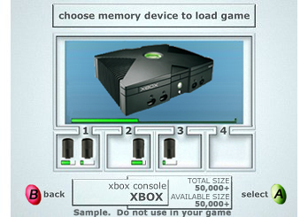
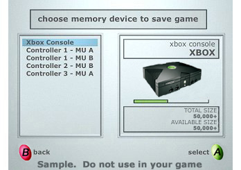
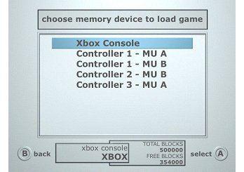
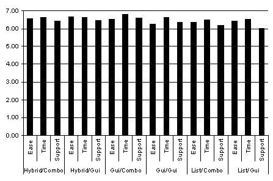
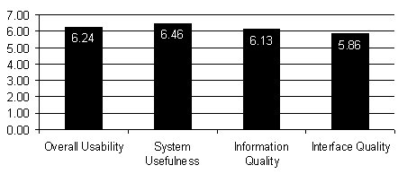

We tested three different models for selecting the location from which to load the game.
| Model | Screenshot |
|---|---|
| GUI |  |
| Hybrid |  |
| List |  |
Participants preferred the GUI model. The Hybrid model was a close second, and no users selected the List model as their favorite. The ASQ ratings did not differ significantly between the models. The ASQ and PSSUQ ratings are given below. The ASQ ratings focus on ease of use, time spent on the task, and usefulness of the screen information. ASQ ratings were completed after each task. The PSSUQ ratings break down into four factors: overall usability, system usefulness, information quality, and interface quality. The participants completed the PSSUQ ratings after all of the tasks.
ASQ Ratings for Individual Models
 |
| ASQ Ratings |
PSSUQ for All of the Load / Save Game Models
 |
| PSSUQ Ratings |
If your program cannot read a memory unit, you should display this error message for the user: "This memory unit isn't working; it may be damaged. Press A to continue." For a current list of sanctioned error messages, please see "Standard UI Messages" in the Xbox Guide.
Usability Issues with GUI
Recommendation: Selection color should be very obvious and it should not blend into the background.
Recommendation: Have the gauges show the space used on the device.
Recommendation: Have the gauges change color to yellow when the space available is less than 10 percent and to red when there isn't room on the device to save the game.
Participants liked the descriptive data that was displayed for each memory device. They appreciated knowing how much space was available. They also liked the ability to give custom names to each device.
Participants thought that this navigation screen was the easiest one on which to see what devices were connected to the system. They really liked the physical layout.
Usability Issues with Hybrid
Recommendation: Have the gauges show the space used on the device.
Recommendation: Have the gauges change color to yellow when the space available is less than 10 percent and to red when there isn't room on the device to save the game.
Participants thought that the navigation between devices was the easiest in this model. Again they liked the custom names of the devices and the descriptive data shown for each device.
This model doesn't show the available storage space for each device. Also, the location of memory units cannot be seen until they are highlighted.
Usability Issues with List
Recommendation: Have the gauges show the space used on the device.
Recommendation: Have the gauges change color to yellow when the space available is less than 10 percent and to red when there isn't room on the device to save the game.
The List model is the most popular in today's video games. The List model was not popular with users even though it was something they were very familiar with in gameplay.